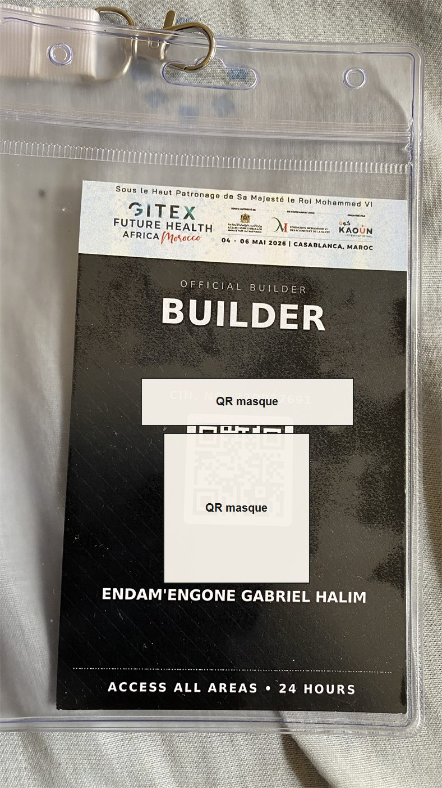
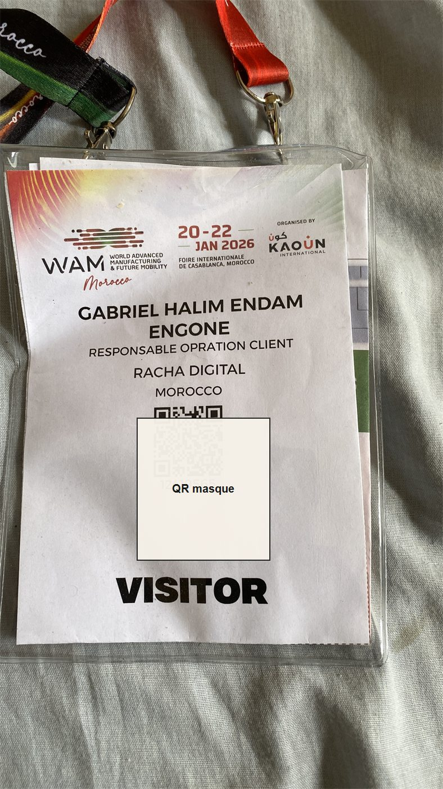
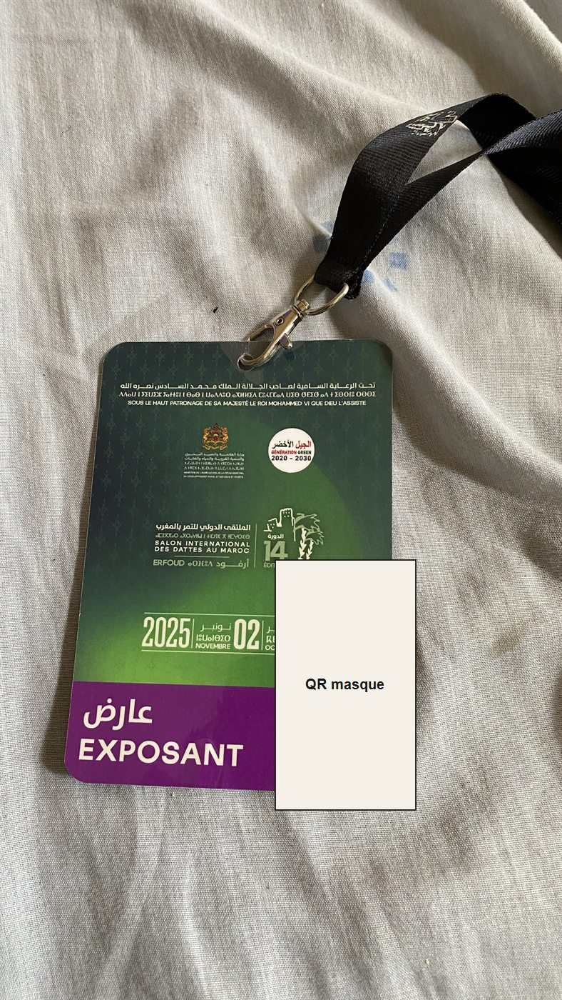
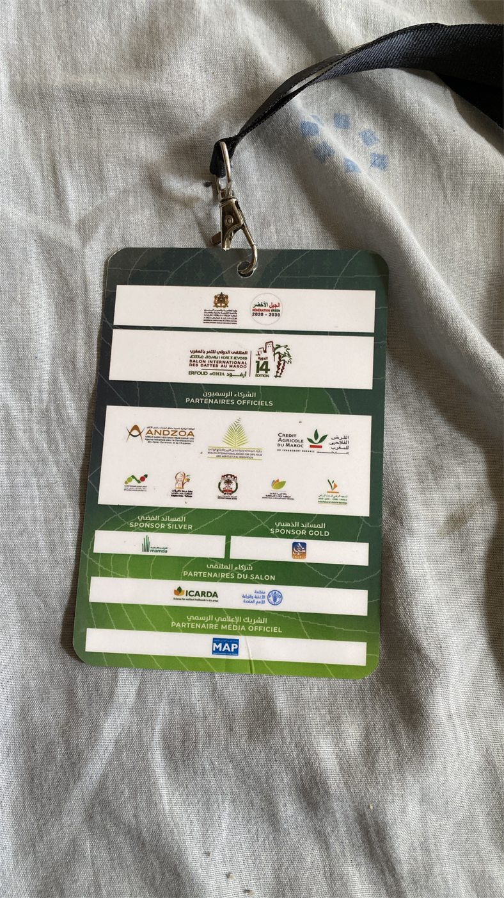
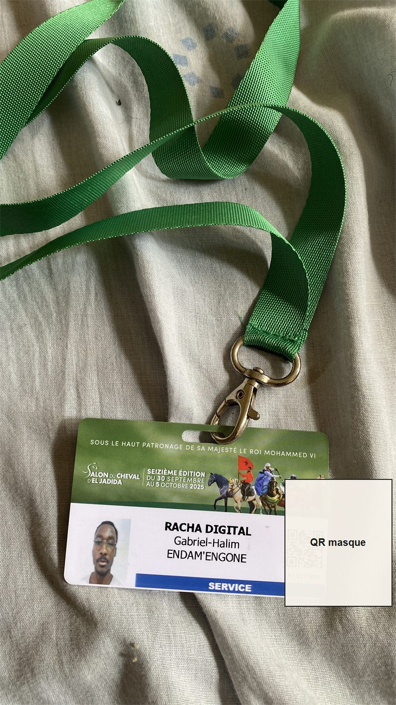
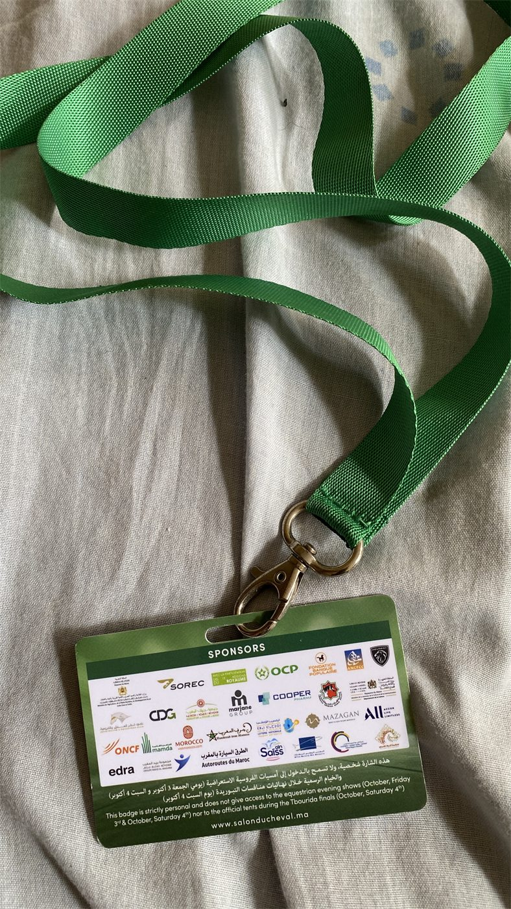
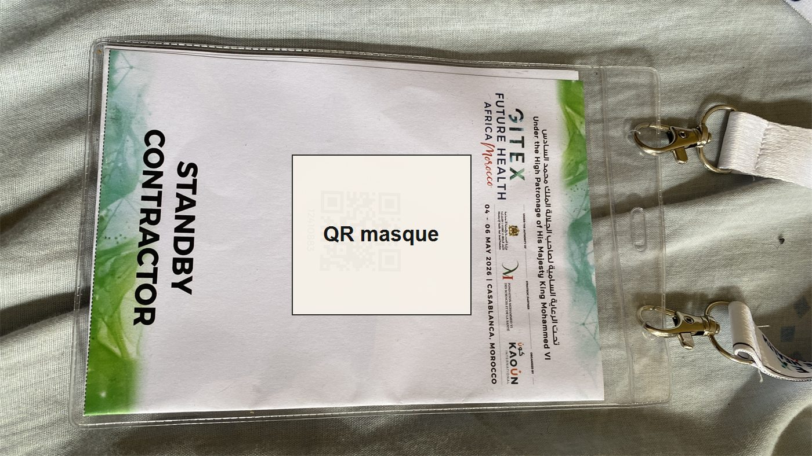
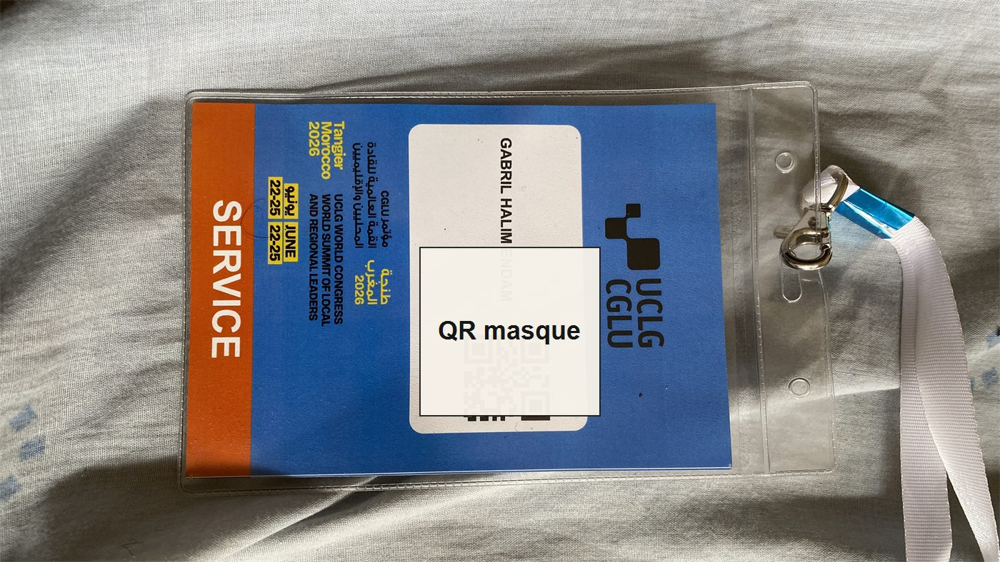
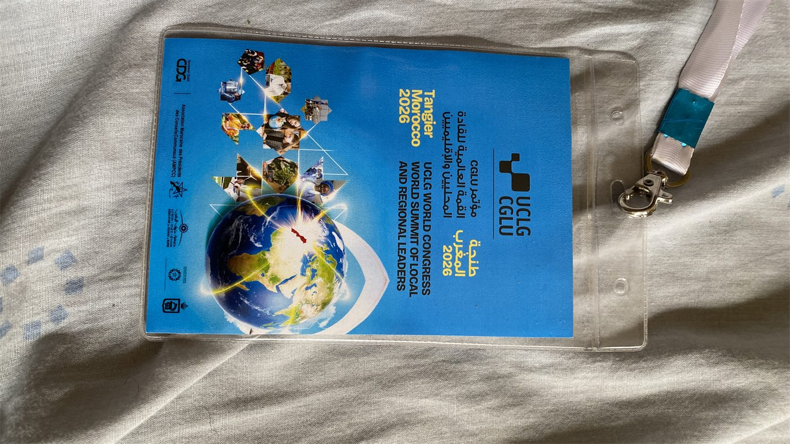

Intégration frontend
Pages responsives, composants réutilisables, animations maîtrisées et rendu cohérent sur mobile comme desktop.
Frontend developer · Casablanca
Je conçois et développe des expériences web responsives avec une attention particulière à la lisibilité, l'accessibilité, la performance et la coordination entre besoins métier et exécution technique.
portfolio.ui
const focus = "clean UI";
build({ responsive: true });
ship("accessible frontend");
Pages responsives, composants réutilisables, animations maîtrisées et rendu cohérent sur mobile comme desktop.
Expériences dynamiques avec navigation fluide, logique claire et attention portée aux états utilisateur.
Capacité à traduire un besoin client en tâches concrètes, priorités, estimations et livrables vérifiables.
Chaque projet met en avant une compétence utile en frontend : structure, responsive, parcours utilisateur, intégration ou capacité à livrer dans un contexte réel.
Dashboard web pour piloter un projet IT : synthèse, Kanban, sprint, reporting, Jira, alertes et équipe.
Application mobile de transfert d'argent avec parcours simplifié, historique et suivi transactionnel.
Site vitrine pour une salle de sport avec programmes, abonnements, planning et contact.
Collection de pages web centrées sur l'intégration, les animations CSS et les bases SEO.
Mini-jeux Python pour consolider logique, structures de données et interaction utilisateur.
Outil de coordination technique pour événements live : LED, checklist et suivi incidents.
Contribution à une plateforme éducative : intégration, fonctionnalités et corrections UI.
Landing page événementielle avec galerie dynamique, animations et responsive design.
Une sélection de badges et preuves de participation. Tous les événements ne sont pas affichés ici : certains n'avaient pas de badge ou de support visuel exploitable.
Participation sur site avec des missions liées à l'accueil, la coordination technique, le suivi client et l'appui aux équipes pendant les phases de montage, d'exploitation ou de service.
Participation en environnement salon tech/santé, avec badge builder et standby contractor.
Présence événementielle autour de la mobilité avancée et du suivi opération client.
Participation côté exposant, gestion terrain et coordination pendant l'événement.
Service événementiel sur un salon institutionnel à forte exigence opérationnelle.
Support service lors d'un congrès international réunissant des acteurs locaux et régionaux.
Autres missions terrain, salons, opérations live et événements sans badge ou support visuel à afficher.









Expertise
Conception d'écrans web, intégration responsive, composants réutilisables et interfaces maintenables.
Hiérarchie visuelle, accessibilité clavier, états interactifs, performance perçue, cohérence mobile.
PHP, SQL, CMS, formulaires, intégration de contenus et corrections fonctionnelles.
Agile/Scrum, Jira, Trello, MS Project, analyse des besoins, planning, priorisation.
Parcours
Suivi des besoins clients, estimation, priorisation et contribution aux processus web.
Coordination technique événementielle, synchronisation multimédia et résolution rapide d'incidents live.
Formation FEDE en management de projet IT, organisation, pilotage et livraison.
Base technique web, développement, intégration et logique applicative.
Contact
Basé à Casablanca, ouvert aux collaborations web, aux missions de développement frontend et aux projets mêlant interface, coordination et livraison.